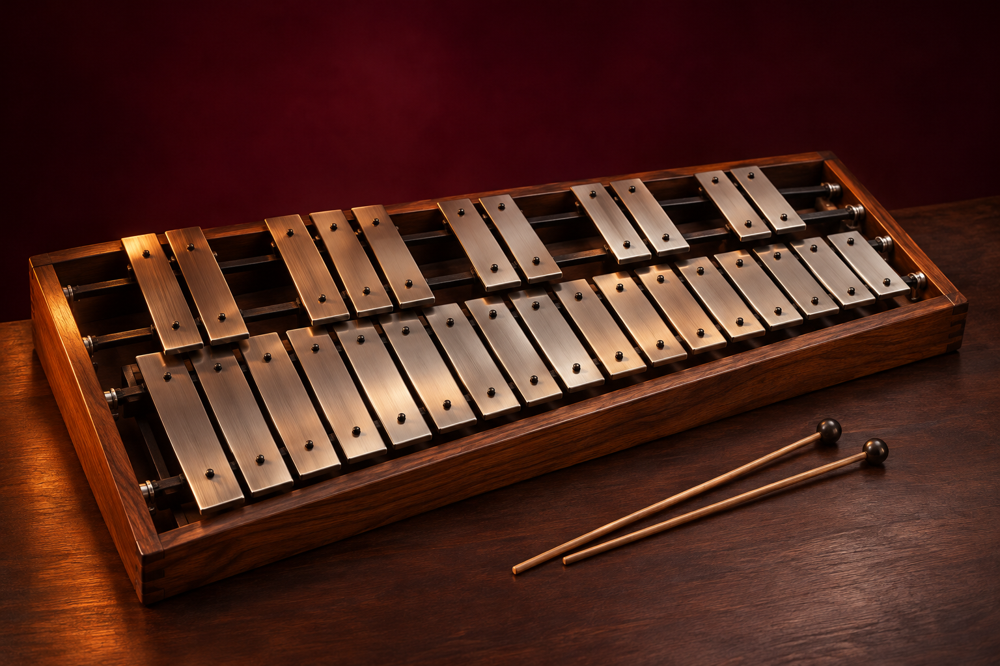

Glockenspiel · Tocar el instrumento · Ver los métodos
WALAMORT · EXPLORA. APRENDE. CREA.
Glockenspiel virtual
El instrumento de la semana tiene un nuevo espacio para aprender: escucha, localiza las notas y construye tus primeras frases.
Glockenspiel · Ilustración editorial generada para Walamort; no representa un ejemplar del inventario.

Toca las láminas o usa las teclas indicadas. Hay 25 alturas reales de Do5 a Do7. Desplaza el tablero horizontalmente en pantallas pequeñas.
Ejercicio
Sonido por síntesis de láminas metálicas, no muestras grabadas. La práctica evalúa el orden de notas, no el ritmo, la técnica de baquetas ni la intensidad de cada golpe. No se activa micrófono ni se guardan sesiones.
Referencias del instrumento
El glockenspiel usa láminas metálicas y se organiza cromáticamente en dos filas. El simulador muestra alturas que suenan. En la escritura orquestal habitual, el instrumento suena dos octavas por encima de lo escrito; aquí no se aplica esa transposición a las etiquetas. El rango elegido es educativo y no pretende copiar un modelo comercial.
Yamaha · glockenspiel · Vienna Symphonic Library · glockenspiel